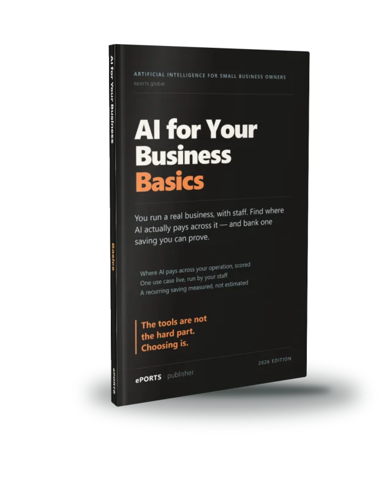

Find where AI pays across your operation, and bank a verified recurring saving
For: you run a business with staff, you're AI-curious, and you half-suspect it's real for other firms but you're not sure it's real for yours — and you're wary of wasting money, looking foolish, breaking something, or unsettling your team.
You finish with: one real job in your operation measurably cheaper every week, with a person still in charge where it counts — or a tested, honest read on why not, and the next test to run.
Nine chapters: what today's AI really does and doesn't do for a business like yours; scoring your team's tasks to find the two or three where it pays (the opportunity map); matching each job to the kind of tool that does it; running one bounded first test against a pass line you set first; what staff may and may never put in (the data rule); a team-owned voice standard and review gate so nothing off-brand reaches a customer; the human check that catches AI when it's confidently wrong; deploying it and verifying the recurring saving on the number; and the good problem on the other side — it pays, but it's ad-hoc and everything still routes through one person.
Comes with, free: the opportunity map, the one-page data rule, the "what good looks like" standard and review gate, the fact-check guardrail, and the keep/kill saving calculator.